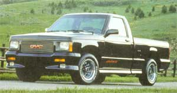
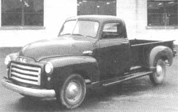

Tips on What to Look for
LAST TIME YOU HAULED SIX SACKS of chicken feed in your VW Vanagon, did the ol' boy take on a permanent list to starboard? Does your wife refuse to drive the family Dodge station wagon now that you've used it to haul manure from the cow barn to the south patch? Does your Chevy Eurosport bottom-out and high-center every time you drive out to the highway to get your mail?
Maybe you need a pickup truck. Until horses and oxen make a really big comeback, pickups are here to stay on farms and ranches, large and small, in businesses and for pleasure. Pickups are modem-day America's utilitarian, jack-of-all-trades workhorses. They're available in a surprisingly large variety and in a broad range of power and payload capabilities.
Once you've recognized the need to replace your small hauler, station wagon, or sedan with a utility vehicle, the next-and most difficult-task is to select the truck that's exactly right for your needs: your hog farm, your fumiture-refinishing business, or the family's third pregnancy in five years. First, can you afford to buy new, or will it have to be a used truck that needs refitting to make it serviceable? Next, can you afford to feed a big V-6 or V-8 in a heavy hauler? Or do you prefer the thrifty sips of a small, imported, four-cylinder mini-pickup to serve your needs?
And what's the maintenance-cost factor of the truck you think you'd like to buy? Four or six new spark plugs cost less than eight. But four, six, or eight cylinders each use only one oil filter. However, it costs more to fill an eight-quart oil sump in a Chevy 350 diesel engine than it does to top-up a four-quart reservoir in a Ford Ranger. Can you do the maintenance work-outside tuneups, plug changes, carb adjustment, and lubrication-yourself, or will you have to take your truck to a dealer or a local service station? The greater the complexity of a truck and its accessories, the more its routine maintenance and repair will cost, even if you do the work yourself.
BEFORE MAKING A PURCHASE, consider situations that might be called "overtruck" and-conversely-"undertruck." If you live alone beside a paved road and make your living as a goosedown plucker, you certainly don't need a Ford F-350 four-wheel-drive, one-ton truck with full six-passenger crew cab. And if your thing is making and selling home-built anvils by the gross, you won't be able to get by with a standard ¾-ton, entry-level model either.
This is probably the most important specification for any given pickup truck...and this handy figure isn't always one of the numbers provided by the manufacturers. It's sometimes difficult to ferret out exactly how many pounds of cargo you can stuff into a particular truck. Here's the formula for calculating (before you buy, ferhevvensakes!) a specific truck's payload capacity:
Gross Vehicle Weight Rating (GVWR) in pounds, minus curb weight in pounds, minus the weights of driver and passengers) equals cargo capacity in pounds. Usually the figure for a specific truck's GVWR can be found on a sticker posted somewhere inside the vehicle's left-hand door frame. Curb weight (or dry weight) is available in the manufacturer's specifications or by actually putting the truck on a public scale. The GVWR sticker doesn't always tell the story of how much cargo a truck can carry, however, so a prospective pickup buyer should do his math-the big truck may not always be the best truck for x number of pounds of anvils or goosedown.
What a vehicle can safely accommodate in terms of pounds and/or cubic volume of cargo may not be exactly what it can move effortlessly from Point A (farm) to Point B (market). A ton of anvils weighs the same as a ton of goosedown, but 100 cubic feet of anvils requires greater power and torque from the engine than does the same volume of goosedown. Horsepower and torque are the chief requirements for moving heavy cargo. These must be delivered to the road to move the truck-and its load-in a forward direction.
The transmission and drive axle take the engine's power and deliver it to the drive wheels. Inside a transmission (automatic or manual) are gearsets-low and intermediate gears to get things rolling and up to speed, and top gear for cruising. The drive axle contains the final drive gearset, most important because it's the key factor in effective overall multiplication of the engine's horsepower and torque output.
Engine, transmission, and drive axle together are called the "drivetrain." The larger the engine's piston displacement (the total cubic volume of all of its combustion chambers), the more horsepower and torque the engine develops. A 350-cubic inch, V-8 firebreather, for example, can easily deliver 220 horsepower (or more if modifications are made); while a 110-cubic inch, four-cylinder tiddler can develop as little as 70 or as much as 120 horsepower. So don't be thrown when salesmen rhapsodize about the cubic inches of their particular engines-it's merely one way (of many) to indicate how powerful an engine might be.
Questions a would-be pickup buyer needs to ask himself are: 1) will this particular engine, with respect to the cargo capacity of this truck, do the jobs I have in mind?; and 2) is there something offered by another manufacturer that can do these jobs better, maybe more economically? Which means you'd better shop around a bit among engines to familiarize yourself with their horsepower capabilities.
AMONG PICKUP TRUCKS AVAILABLE in the United States, transmission selection is limited generally to four-and five-speed manual transmissions, and three-or four-speed automatics. Manual transmissions are up to 15 percent more economical in terms of fuel consumption. Some four-and five-speed manuals offer overdrive capability. That is, in fourth or fifth, the engine's speed (rpm) is reduced in relation to road speed, hence there's potential for fuel economy. Manufacturers have worked out these horsepower/engine-rpm/road-speed equations as best they can for trucks that serve many kinds of masters. Don't buy a four- or five-speed, an overdrive gearbox, or an automatic unless you've thought it out prior to signing the contract.
Additional things you might want are a limited-slip rear axle, heavy duty shock absorbers, or
front (or rear) anti-sway bars.
As for drive-axle or "rear-end" gearing, the only way you can get what you really want (i.e., need) is to order your pickup new from the factory. Of course you'll pay the premium price for the truck, but you get what you pay for, which in this case is exactly what you need (i.e., want). It's the axle ratio that's important, and the ratio is always expressed "to one," as in 3.40:1. A 4.10:1 ratio, though numerically high, is considered a "low" axle ratio, appropriate for pulling stumps. Conversely, a 2.72:1 axle ratio, though numerically low, is considered "high" gearing and is often termed "tall" or "long-legged." The majority of light trucks are factory equipped with intermediate axle ratios. The stump-puller gears are great when you're running a load of fenceposts down through the bog; and the tall gearing is fine for economical freeway running when your truck is lightly laden.
Tires are another prime consideration when buying a light-utility vehicle. No matter what the conditions where you live- whether muddy, rocky, or snowy-tires are available that are just right for your pickup. Your local salesman can place your order for a set of any number of factory-fitted, steel-belted radial, all-terrain, mud-and-snow, desert, or conventional street-treaded tires to be delivered with your truck. It might be best to opt for the lowest-priced, factory-standard blackwall cheapies. Analyze what terrain conditions you're exposed to most frequently; then, when the cheapies wear out (and factory originals tend to do so rather quickly), replace them with the tires that will best suit your needs. You may have to purchase a second set of wheels to accommodate wider (or larger diameter) tires according to your local terrain, but getting exactly the right tires for your tasks is what's important. And all the work that went into choosing them correctly will seem laughably easy compared to hauling your truck out of the mud.
An investment in a new pickup can tax a family's bank account considerably. So unless you have an uncle on the board of Exxon, watch what you're doing when you head out to buy a truck. For example, a 1992 Mitsubishi Mighty Max standard pickup with a five-speed transmission and 1,600-pound payload capacity (the “3/4-ton” rating which is common in the entry-level classes) is sold at a suggested price of $8,100. Try to buy that truck for that price! It is rare indeed when a base truck without frills comes off any assembly line. The vast majority of trucks arrive with some options the salesmen consider indispensable. Almost always, they are very dispensable-and it is your job to be firm and reject what you do not want. You'll also be faced with state and/or local taxes, license fees, and-if you finance the vehicle through a bank-interest charges.
FINANCING YOUR PURCHASE CAN BE a complicated process. Most dealers will offer an interest rate a couple of points over the prime lending rate (that's $300 to $400 on each $ 1,000 paid off in a 36-month contract, folks). They have a great deal of flexibility as to what they offer, however, depending upon what kind of debt the consumer is burdened with and his or her credit rating. And what of those huge rebates constantly being offered? As you might imagine, you do pay for that rebate over time with increased interest rates. After consulting with several dealerships, I can safely tell you that it's best to opt for as low an interest rate as possible, even if it means forgetting about that $1,000 in cash you wanted to devote to the new stereo.
One thing to look out for when ordering a new truck is getting carried away by a salesman's enthusiasm. Remember, air conditioning can cost you up to $750; an AM/FM stereo system nearly $300; a bigger engine anywhere from $300 on up; and a nifty upholstery and bright metal trim package $1,100. It all adds up-on the salesman's order, on your payments, on your contract with the lender, and in the amounts you're obligated to pay in taxes, license fees, bank interest, and insurance. A fully loaded pickup can easily cost $20,000. So consider whether you need all the frills for hauling anvils, goosedown-and manure and fenceposts.
A couple of things you might want to order to make your truck a tougher performer are a limited-slip rear axle (about $200); heavy-duty shock absorbers all-around (about $100); automatic-transmission oil cooler (about $100); front and/or rear anti-sway bar ($75); and heavy-duty electrical and/or cooling-system components (prices vary). There are also trailer-towing and cold-weather packages available for special applications. You can look into these and their costs (before you buy!) at your friendly local automotive outlet.
If you're planning on buying new, tradition has it that late summer or early fall is the best time to make the purchase for the best price. The myth is that dealers are usually overstocked and must move the vehicles on their sales lots very quickly to make way for the all-new, next-year's models. But remember, the vehicles that remain on sales lots are what haven't been bought by discerning truck customers, and you'll have to take what's available (not necessarily what you want/need); and in a month or so you'll have lost value equal to a year's depreciation on the truck.
It's a slightly worn adage, but perfectly appropriate for a first-time consumer: Let the buyer beware. What it means simply is that you must think, plan, research, and investigate before leaping out of bed one Saturday morning and grabbing the checkbook. You will save money if you are careful, and that will make all those miles in your truck a lot sweeter.
For tips on how to buy a used truck, see "Bellow".
IF THE MAZE OF FINANCING (SEEMINGLY laid out specifically to confound new truck buyers) doesn't interest you, then you'll probably be considering a used pickup. It's absolutely necessary to be armed with some good advice before you stride onto the used-car lot. Don't let anything rush you. Know what your exact price range is and don't deviate from that original plan. Find out if the seller has maintenance records available. Not all will, but most conscientious owners keep good records of their maintenance. And don't ever allow yourself to be rushed. Tell the seller that you're going to need 45 minutes to an hour with the truck. If he can't spare the time, you can't spare the money. MOTHER asked a retired mechanic to supply us with any information that he felt a used-truck buyer needs before spending even the first penny. He offered the following 12 checkpoints:
1. Examine the truck only in daylight; even a well-lit lot will conceal defects and hamper a good inspection. You should also be on level ground in order to check the fluids correctly.
2. Check each opening and body-panel joint for fit. Run your hand along the bottom of the doors and check for hard, rusty edges. Check the panels along the body from back to front; if they seem wavy or uneven, check them with a magnet (plastic body repairs won't attract a magnet).
3. If there are any raised spots on the roof, it means rust underneath. A more extended inspection of that area might be necessary if you want to buy that vehicle.
4. Look at the inside of each tire for signs of leakage (brake fluid, grease) and tread wear.
5. Raise the hood, remove the radiator cap, and take a look at the coolant fluid. Usually it will be greenish in color. If the color seems wrong, or if the fluid has rust in it, the engine will probably have a tendency to overheat. If you are unsure of the quality of the fluid, an inexpensive tester would be a good investment. Next, examine the air filter for excessive dirt, as well the surface of the engine itself. Large amounts of grease or oil deposited on the engine are an indication that it wasn't well cared for. Look for recent engine work, like edges of new gaskets showing. Most engines will go 70,000 to 80,000 miles before any major engine work is necessary, but all motors should be checked thoroughly in case the previous owner's favorite hobby was drag racing. If the car has an automatic transmission, check the transmission dip stick. If the oil on the stick has a burnt smell (like burnt cork) BACK OFF! This usually means transmission trouble on the horizon.
6. Start the engine. Make sure there are no knocks or thuds. These sounds may indicate a bad crankshaft or connecting-rod bearing, and both of them are costly repairs. All trucks should have a high idle setting. Fuel-injected engines automatically set theirs, carbureted engines will require applying some generous gas after starting to set the fast idle. If the idle does not seem right, have the engine checked by a mechanic.
7. After the vehicle comes off fast idle, put it in drive and set the emergency brake to see if it holds. Put it in park and let it idle while you go to the rear. Use a rag (wad it up) to cover the tailpipe outlet. If you do not feel pressure while holding the rag against the end of the tailpipe, you have a leaky exhaust (often you'll be able to hear such a leak as well). Put your car in drive with your foot on the brake to see if it idles okay.
8. Check all switches and extras on the car (lights, air, etc.)
9. Shut off the motor, open the trunk, raise the mat and look for rust. Some light rust will be present even on new cars, but keep an eye out for more severe corrosion. While checking the trunk look at the wiring that crosses the rear, has it been cut and taped for trailer wiring?
10. Drive the car at least 10 miles, shut the engine off, allow it to cool for a moment, and then start it again. If the engine hesitates upon starting the second time, have it checked by a mechanic. Once started, accelerate very slowly to see if the transmission upshifts smoothly. Then check acceleration up to highway speed for engine smoothness. It's always a good idea to take somebody with you on a test drive. The extra rider will be able to notice things like rattle and wind noise that the driver might be oblivious to.
11. At a safe place, try a panic stop to see if the brakes behave. Next, try a rough road to see if the shocks control after bouncing. Bounce the truck's front end-if it bounces more than three times, the shocks are worn.
12. Odometer (mileage meter) tampering is still commonly used to deceive buyers. Although gauges in new models are more difficult to tamper with, you should still be careful. If a seller tells you that his '85 pickup has 35,000 miles on it, check for a few things, such as excessive wear on the brake pedal (if the comers are worn away, there's a lot more than 35,000 miles on the truck); wear on the armrests and upholstery; and large numbers of pits on the windshield.
These simple checks won't take long and are about as comprehensive as you can manage without a complete mechanical inspection. If any seller hesitates to allow such an examination, it's a very good indication that you should be looking elsewhere for a truck. With used vehicles especially, the time and care you devote to the search will definitely pay off.
Tips provided by Don’s Mobil, 960 Fall River Ave., Seekonk, Massachusetts 02771. MOTHER wishes to thank Kenny Meade and Donald Ringuette for their advice and assistance with this article.
|
 PHOTOGRAPH ? COURTESY OF GMC TRUCK DIVISION |
 PHOTOGRAPH ? COURTESY OF GMC TRUCK DIVISION |
|